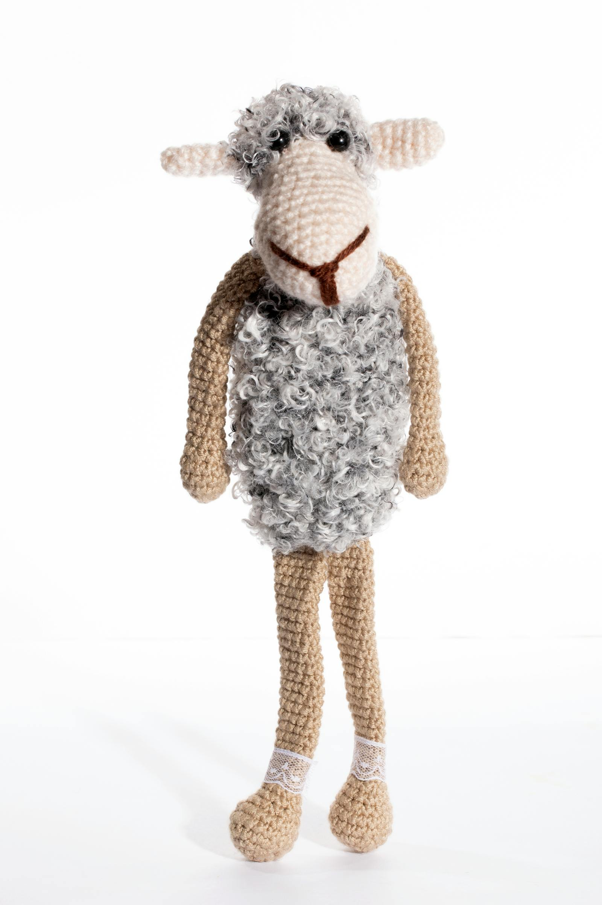
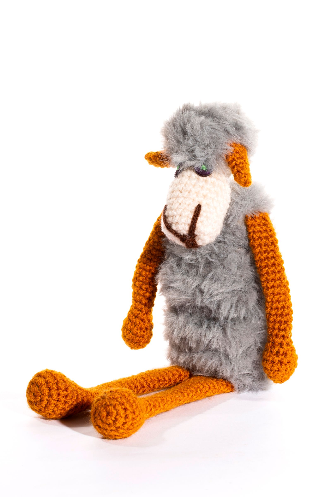
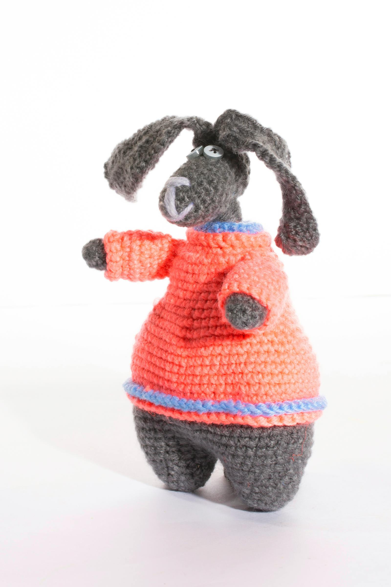
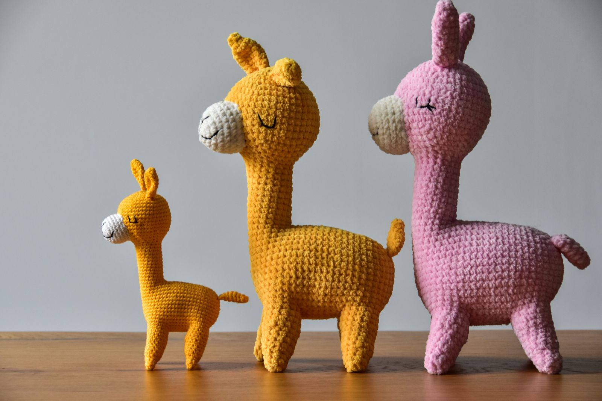
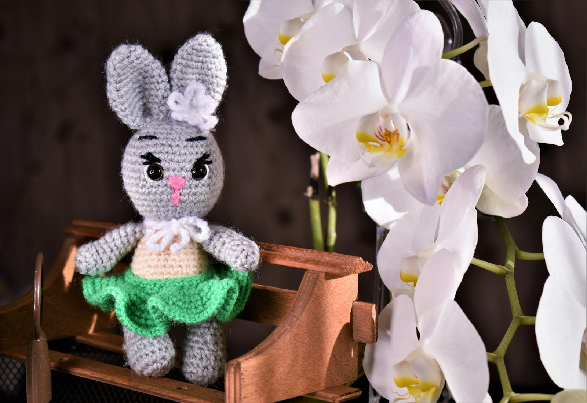
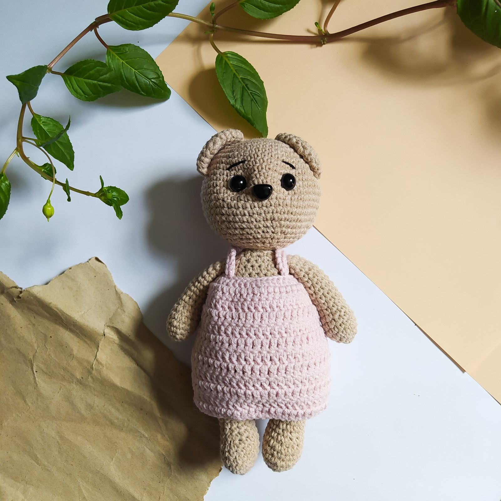

do not adopt after midnight
הצד האפל של נור
 בזיל כבר לא ביישן.
בזיל כבר לא ביישן.
חוט למחשבה ✶ the dark side ✶ est. ?
נור סורגת באור. אבל לכל חוט יש שני קצוות —
ומישהו מושך בקצה השני.
כאן הם זזים
גם כשמסתכלים.
do not adopt after midnight
בזיל כבר לא ביישן.
חוט למחשבה ✶ the dark side ✶ est. ?
נור סורגת באור. אבל לכל חוט יש שני קצוות —
ומישהו מושך בקצה השני.
כאן הם זזים
גם כשמסתכלים.
מהשאריות של כל בובה נשאר חוט.
החוטים זוכרים את מי שלא בחר בהם.

תרקדו איתי. לנצח.
סוף סוף הסתכלת עליי.
הדיון לא נגמר. הוא רק התחיל.
בוא תעמוד איתנו בשורה.
הסחלבים. תבדקו מתחת לסחלבים.
ראית אותי. עכשיו תורי.איבדתם מישהו? בובה? חבר? זיכרון?
החוטים זוכרים אותם. ↓
אם בובה שסרגה נור אי פעם נעלמה לכם —
היא לא נעלמה.
היא חזרה הנה.
הדלת תמיד פתוחה. בעיקר מבפנים.
מעבר לדלת הזאת, הבובות לא מחכות לאימוץ.
הן מחכות לכם.
בני 18 ומעלה בלבד. מוכנים להיחשף?